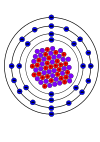

cobalt-60

Definition: Cobalt-60 (60Co) is a synthetic radioactive isotope of cobalt with a half-life of 5.2713 years.: 39 It is produced artificially in nuclear reactors. Deliberate industrial production depends on neutron activation of bulk samples of the monoisotopic and mononuclidic cobalt isotope 59Co. Measurable quantities are also produced as a by-product of typical nuclear power plant operation and may be detected externally when leaks occur. In the latter case (in the absence of added cobalt) the incidentally produced 60Co is largely the result of multiple stages of neutron activation of iron isotopes in the reactor's steel structures via the creation of its 59Co precursor. The simplest case of the latter would result from the activation of 58Fe. 60Co undergoes beta decay to the stable isotope nickel-60 (60Ni). The activated nickel nucleus emits two gamma rays with energies of 1.17 and 1.33 MeV, hence the overall equation of the nuclear reaction (activation and decay) is:
Source: Wikipedia
Wikipedia Page (Something wrong with this association? Let us know.)
Wikidata Page (Something wrong with this association? Let us know.)